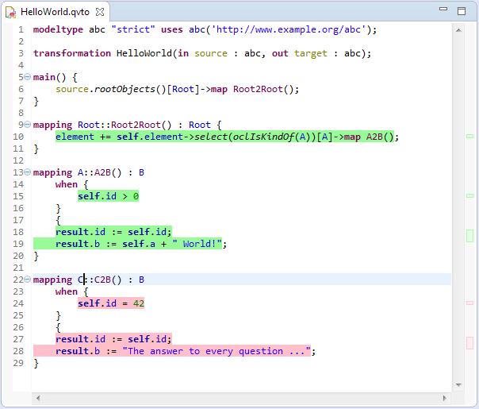

The Code Coverage tool provides capabilities to annotate the Operational QVT Editor to highlight covered and non-covered parts of a transformation module or library unit. An example is shown in the figure below.

The coverage overlay uses custom Eclipse text markers displayed over the visited and unvisited expressions to achieve the desired coloring. Small green and red markers also show up right hand side of the editor, which provide an overview of the highlighting throughout the file, which is a particularly useful feature for large transformations.